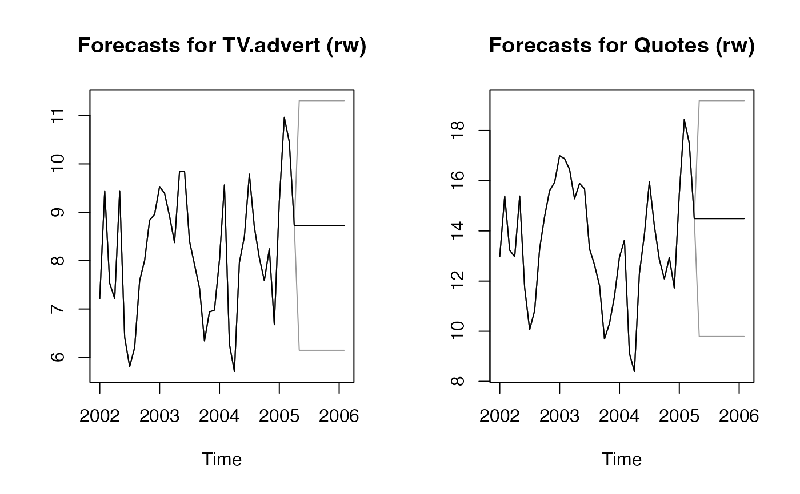
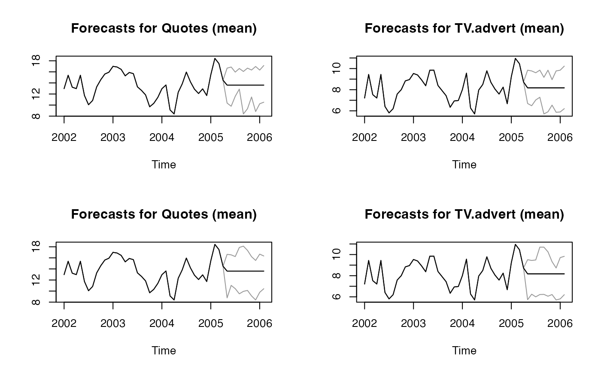

basicf.RdBasic forecasting functions for multivariate time series
A multivariate time series of class ts or a matrix
Forecasting horizon
Confidence level for prediction intervals
forecasting method, either "mean", "median", or random walk ("rw")
type of prediction interval currently, "gaussian", "bootstrap", "blockbootstrap" or "movingblockbootstrap"
length of block for (circular) "blockbootstrap" or "movingblockbootstrap"
reproducibility seed for type_pi == 'bootstrap'
Number of bootstrap replications for type_pi == 'bootstrap'
A boolean; show progress bar for bootstrapping? Default is TRUE.
An object of class "mtsforecast"; a list containing the following elements:
The name of the forecasting method as a character string
Point forecasts for the time series
Lower bound for prediction interval
Upper bound for prediction interval
Model simulations for bootstrapping (basic, or block)
The original time series
Residuals from the fitted model
Regression coefficients for type_pi == 'gaussian' for now
require(fpp)
#> Loading required package: fpp
#> Loading required package: fma
#> Loading required package: expsmooth
#> Loading required package: lmtest
#> Loading required package: zoo
#>
#> Attaching package: ‘zoo’
#> The following objects are masked from ‘package:base’:
#>
#> as.Date, as.Date.numeric
res <- ahead::basicf(fpp::insurance, h=10)
par(mfrow=c(1, 2))
plot(res, "TV.advert")
plot(res, "Quotes")
res <- ahead::basicf(fpp::insurance, method="rw", h=10)
par(mfrow=c(1, 2))
plot(res, "TV.advert")
plot(res, "Quotes")

# block bootstrap
res3 <- ahead::basicf(fpp::insurance, h=10, type_pi = "bootstrap", B=10)
#>
|
| | 0%
|
|======= | 10%
|
|============== | 20%
|
|===================== | 30%
|
|============================ | 40%
|
|=================================== | 50%
|
|========================================== | 60%
|
|================================================= | 70%
|
|======================================================== | 80%
|
|=============================================================== | 90%
|
|======================================================================| 100%
res5 <- ahead::basicf(fpp::insurance, h=10, type_pi = "blockbootstrap", B=10,
block_length = 4)
#>
|
| | 0%
|
|======= | 10%
|
|============== | 20%
|
|===================== | 30%
|
|============================ | 40%
|
|=================================== | 50%
|
|========================================== | 60%
|
|================================================= | 70%
|
|======================================================== | 80%
|
|=============================================================== | 90%
|
|======================================================================| 100%
print(res3$sims[[2]])
#> Quotes TV.advert
#> May 2005 9.69184 6.340490
#> Jun 2005 9.12098 6.272510
#> Jul 2005 12.97065 7.212725
#> Aug 2005 12.97065 7.212725
#> Sep 2005 13.28780 8.402730
#> Oct 2005 15.88901 9.844505
#> Nov 2005 12.30076 7.963540
#> Dec 2005 12.93375 8.244881
#> Jan 2006 12.64484 7.920675
#> Feb 2006 15.93515 8.957255
print(res5$sims[[2]])
#> Quotes TV.advert
#> May 2005 12.97065 7.212725
#> Jun 2005 15.38714 9.443570
#> Jul 2005 13.22957 7.534250
#> Aug 2005 12.97065 7.212725
#> Sep 2005 11.72288 6.415215
#> Oct 2005 10.06177 5.806990
#> Nov 2005 10.82279 6.203600
#> Dec 2005 13.28707 7.586430
#> Jan 2006 9.69184 6.340490
#> Feb 2006 10.30415 6.939995
par(mfrow=c(2, 2))
plot(res3, "Quotes")
plot(res3, "TV.advert")
plot(res5, "Quotes")
plot(res5, "TV.advert")

# moving block bootstrap
res6 <- ahead::basicf(fpp::insurance, h=10,
type_pi = "movingblockbootstrap", B=10,
block_length = 4, method = "rw")
#>
|
| | 0%
|
|======= | 10%
|
|============== | 20%
|
|===================== | 30%
|
|============================ | 40%
|
|=================================== | 50%
|
|========================================== | 60%
|
|================================================= | 70%
|
|======================================================== | 80%
|
|=============================================================== | 90%
|
|======================================================================| 100%
par(mfrow=c(1, 2))
plot(res6, "Quotes")
plot(res6, "TV.advert")